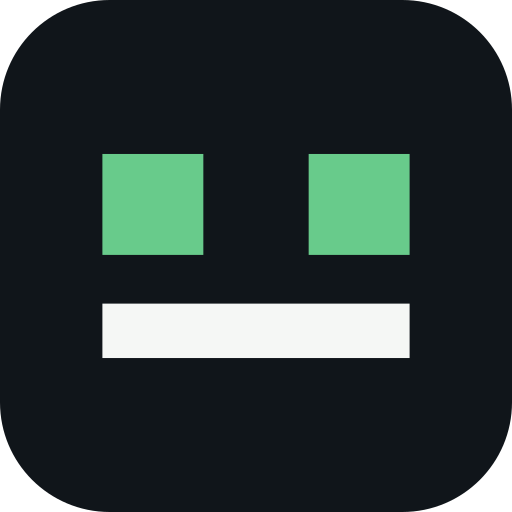

EMPLEADOS DE INTELIGENCIA ARTIFICIAL
Procedimientos claros para trabajo real.
CATÁLOGO PÚBLICO · NOVIEMBRE 2026
Arquitecturae ingeniería
Empresa yadministración
Datos yaudiovisual
CON INSTRUCCIONES Y EJEMPLOS